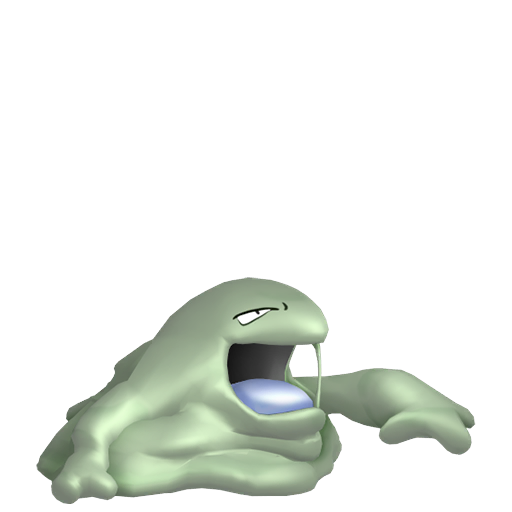
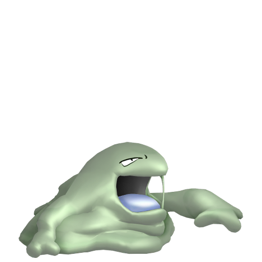
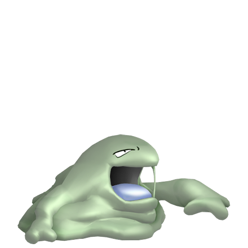

Qu'est-ce que la méthode Chaîne de Pêche en Shiny Hunting ?
La méthode Chaîne de Pêche, disponible dans les jeux de la 6ème génération, X et Y et Pokémon Rubis Omega et Saphir Alpha,
est une méthode de Shiny Hunting qui consiste à pêcher en boucle des pokémon afin d'augmenter les chances d'obtenir un shiny.
Pour effectuer cette méthode il y a plusieurs pré-requis, il va d’abord falloir vous procurer un
Pokémon avec le talent Ventouse ou Glu.
Ce pokemon vous permettra d'augmenter les chances de pêcher un pokémon.
Talent
Pokemon
Ventouse
Glu

Objets
Il vous faudra également obtenir au moins une des trois canne à pêche disponible dans les jeux.
Chaque canne à pêche pêchera des pokémon plus ou moins différent.
Déroulement de la shasse :
1 - Se rendre sur à l'endroit ou le pokémon cherché se trouve.
2 - Se placer à un endroit relativement fermé.
3 - Placer votre Pokémon avec le talent Glu ou Ventouse en tête d'équipe.
4 - Lancer votre pêche.
5 - Fuir le pokémon si il n'est pas shiny.
6 - Continuer jusqu'à trouver votre shiny.
Tuto Vidéo
Si vous le préférez, voici un tuto vidéo pour réaliser cette méthode, celle-ci commence à dater mais explique tout ce dont vous avez besoin.


 
